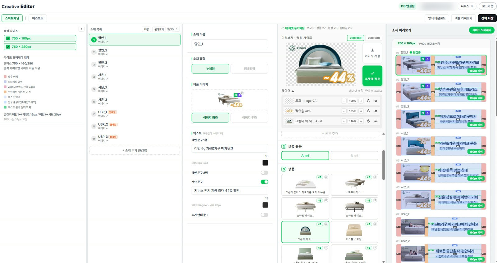

사내 발표
반복 업무를 줄인 방법을 사내에 발표했습니다.
상황
광고 운영에는 자료 수집, 리뷰 정리, 광고 소재 대량 제작, 반복적인 광고 설정, 여러 곳에 흩어진 리포트 정리처럼 시간이 오래 걸리는 일이 많습니다. 이런 작업에 시간을 쓰다 보니 전략을 세우고 성과를 분석할 시간이 줄었습니다.
한 일
반복 업무를 하나씩 골라 작업 순서와 필요한 데이터부터 정리했습니다. 그다음 Claude와 OpenAI Codex로 코드를 작성해 시제품을 만들었습니다. 실제 업무에 사용하면서 수정한 뒤 팀에 공유했습니다. 이렇게 만든 도구 3종과 제작 방법을 2026년 7월 사내 AI 활용 사례로 발표했습니다.
결과
프로모션 소재 제작과 광고 설정
−92%
소요 시간
리뷰 수집과 분석
−83%
소요 시간
팀 반복 업무 시간
−40%
발표 당시 추정치
* 사내 발표 자료에 사용한 수치입니다. 반복 업무 시간 40% 감소는 실제 측정값이 아닌 당시 추정치입니다.
발표한 도구 3종
띠배너 제작 자동화
비즈보드, 스마트채널처럼 같은 형식으로 여러 장을 제작하는 광고 소재를 이미지 템플릿과 자동 설정 기능으로 만듭니다. 도구 개발에는 2일이 걸렸습니다.
리뷰 수집 도구
제품별 리뷰 수만 건을 수집하고 요약해 긍정적인 반응과 부정적인 반응, 주요 키워드를 정리합니다. 이를 광고 문구에 활용합니다. 도구 개발에는 4시간이 걸렸습니다.
성과 대시보드
BigQuery 데이터를 연결한 웹 대시보드를 만들어 수작업으로 작성하던 리포트를 자동으로 생성하도록 했습니다. 솔루션팀과 협업했으며 개발에는 5일이 걸렸습니다.

직접 만든 소재 제작 도구 화면입니다. 업무 메일은 가렸습니다.
그 밖에 직접 만든 도구
리뷰 분석 도구
발표 이후에도 도구를 개선해, 현재는 국내 6개와 해외 2개 채널의 고객 리뷰 10만 건을 20분 만에 수집하고 별점, 긍정과 부정 반응, 주요 키워드별로 정리합니다. 광고에서 강조할 제품 특징을 찾는 시간은 83% 줄었습니다.
COSRX 광고 대시보드
Next.js와 BigQuery를 활용해 기획부터 설계, 구축까지 진행했습니다. 기존 리포트와 숫자가 일치하는지 확인한 과정은 케이스 A에서 볼 수 있습니다.
일본어 검수 도구
약기법과 경표법 관련 표현을 현지 리뷰와 광고 문구에 대조해 검토하는 도구를 직접 만들어 사용했습니다.
헤드라인 생성기
메노킨 기존 광고의 제목 글꼴, 크기, 입체 효과를 수치로 정리해 만든 포토샵 스크립트입니다. 문구만 바꿔 같은 형태의 제목을 다시 만들 수 있습니다.
광고 운영 AI 에이전트 sano
개인 프로젝트로 개발하면서 데이터 수집 오류를 찾아 수정하고, 사전등록자에게 보낼 CRM 메일을 직접 기획하고 발송했습니다.
COSRX 북미
2026년 10월부터 업무량이 많은 북미(세포라) 담당팀에 업무 효율화 역할로 참여하고 있습니다. 실무자와 함께 시간이 오래 걸리는 작업을 찾아 자동화 도구를 만들고 있습니다.
다른 팀 브랜드
사내 뷰티, 아웃도어, 커피 브랜드 담당자들과 면담해 시간이 오래 걸리는 작업을 파악했습니다. 이후 개선 방법을 설계하고 직접 도구를 만들거나 개발 초안을 전달했습니다.
발표에서 나눈 팁
이시스에서는
다양한 메시지와 광고 소재를 만들고 주간 보고서를 작성하는 반복 업무를 자동화하겠습니다. 이를 통해 콘텐츠 담당자, 웹디자이너와 더 효율적으로 협업하겠습니다.